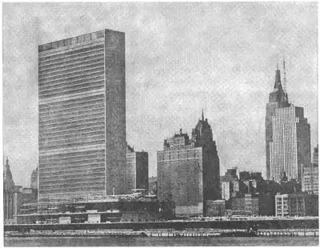

88
NEW IDEAS
新思维

HAVE you ever seen a blue house? Blue all over, I mean—blue roof, blue walls, blue chimney. I’ve never seen a house like that, but I’m sure it would be freaky looking.
Have you ever seen a house all made of steel and glass? Such a house might seem freaky at first, but it would be a different kind of freakiness from the blue house. The blue house could have no good reason for being blue; but a steel and glass house might have a very good reason for being made all of steel and glass. After you became used to it, you might like it very much and find it more healthful to live in than an ordinary house. But the blue house—well, I can’t see what advantage you would get from a blue house, no matter how used to it you became.
A blue house and a steel and glass house have no ancestors. But most styles in architecture do have ancestors, long lines of ancestors.
Just as
the Roman style developed from the Greek and
the Romanesque style developed from the Roman and
the Gothic style developed from the Romanesque,
so most new styles have grown from past styles in architecture. And most buildings put up nowadays make use of the styles that have been found good or beautiful (or both) in the past.
This modern use of past styles seems quite right as long as the modern buildings have the same uses as the buildings of the past. But many modern buildings have entirely new uses not even imagined by the architects of past styles. And so it seems to some architects that these buildings should be just as free from past styles as the uses of the buildings are. Why design a modern electric power house in Gothic style when there is no connection between a power house and any building built when Gothic architecture was in its glory? Why have Roman columns on a gasoline station when the Romans had never heard of gasoline stations?
Many architects, therefore, find it better to design their buildings in a manner that they think suited to the modern use of the building. They think it better to have the style of the building show the purpose of the building than to have its use concealed in the forms of the past. This very modern style of architecture is sometimes called functional because it shows the use or function of the building.
You can see what I mean very well in the history of sky-scrapers. The early sky-scrapers generally had huge Renaissance cornices. Often they had Greek or Roman columns at the main entrance. Later it was thought that the Gothic style was most suitable for sky-scrapers, as in the Woolworth Building in New York City, because of the vertical emphasis in both sky-scraper and Gothic cathedral. But more recent sky-scrapers are designed to look like what they are, steel skeletons covered with a protecting material.
A good example of such a sky-scraper is the office building of the United Nations which was built after World War II in New York City. It is a tall flat-sided building shaped like a thin closed book standing upright. It looks so thin that you think perhaps a very large pair of book-ends might help keep it from blowing over. But no book-ends are needed for, like all sky-scrapers, this building is anchored deep in the ground by strong steel girders. It is a beautiful building because it is so plain and simple. It has no fancy decorations, no gargoyles, no cornices, no sculptured figures. It has no curved lines; all its lines are straight up-and-down or straight across from side-to-side. The many windows of the United Nations building keep it from being too plain and simple. The windows also make it seem not only well-lighted but light in weight.
And what a lot of windows this building has! A housewife can wash the dishes after dinner in less than half an hour. It takes a man several hours to wash all the windows in a house. Think what a big job it is to wash all the windows in the United Nations building. It is supposed to have about five acres of windows.
Even dwellings have been designed to match their present purpose instead of using styles of the past. An American architect named Frank Lloyd Wright was one of the first to design houses in a functional style. He was at first more appreciated in foreign countries than in the United States. One of his best-known buildings is the earthquake-proof Imperial Hotel in Tokyo, Japan, which doesn’t resemble any other building you have ever seen.
In Europe there has grown up a style of architecture that, like the house of glass and steel, has no ancestors. In Holland and Germany this functional style has been very much used for dwellings. They are constructed of steel and glass, brick and concrete, and they seem to use these materials better than any past style could. For instance, they generally have flat roofs instead of sloping roofs, because the use of steel has made the roofs strong enough to stand any weight of snow that might fall upon them. These flat roofs are very convenient for sun porches.
You might think these very modern houses in Holland would spoil the looks of the quaint old Dutch brick houses with their high, steep roofs. But the new-style houses are generally built in groups. One little functional house in a whole street of old Dutch houses would look out of place. But when all the new houses are grouped together the effect is pleasant. They look tidy and shipshape with their smooth concrete and glass sides.
In America, dwellings have not generally been built in this style as much as in Europe. The United States has, however, been building more and more factories and warehouses and stores and office buildings in functional styles, and you can see examples in most of our big cities. They are worth keeping your eyes open for, I can tell you, because, as you grow up, such buildings will probably become more and more important. Most of these buildings are air-conditioned so that the windows are never opened and yet the air inside is always the right temperature and much cleaner than the air outside.
Of course you won’t find much decoration on a functional factory. Such a building has smooth clean-cut lines and a good shape to make it attractive. The later sky-scrapers are the buildings to look at for modern decoration. So also are many of the new public buildings such as libraries and railroad stations. The State Capitol of Nebraska, planned by the famous American architect Bertram, is one of the best-liked new-style buildings. It is entirely unlike buildings of the past and yet no one could call it freakish. In fact, it is almost universally admired.
A building should be the right building for the place where it stands. A building may be very beautiful and still not be suitable for a certain place. A Greek temple would look out of place among sky-scrapers. A modern glass and steel building would look wrong at a university where all the other buildings were in Gothic style.
A building also should be designed for its time in history. Each important period in the history of the world has had its own style of buildings quite different from the buildings that came earlier. Gothic style buildings are still being built, but the important buildings of our time will not be Gothic, nor Romanesque, nor Greek in style. They will have their own style, a new style unlike styles of earlier periods.
And so when you look at a building, especially a new building, you might ask a question or two. Does that building belong to the time when it was built? Is it the right design for the place where it is? You might ask the building these questions. The building won’t answer you in words, of course, but it will give you the answer if you look carefully. Maybe sometime in the future buildings will actually answer your questions in words. It isn’t too hard to imagine a talking building. You press a button on the wall and from an electric speaker in the building might come a voice saying, “I am a building made of steel, glass, and plastics. My architect was John Jones. I was erected in 1992. I don’t want to boast but I think I’m just the right building for this location. I hope you think so too.”

No.88-1 UNITED NATIONS HEADQUARTERS
GENERAL VIEW SHOWING THE SECRETARIAT BUILDING AND THE GENERAL
ASSEMBLY BUILDING UNDER CONSTRUCTION
（联合国总部大楼、联合国秘书处大楼以及建设中的联合国大会主楼一览）
Another new idea in architecture is to build houses the way automobiles are built, in a factory. They could be of steel and glass and turned out by the hundreds, all ready to be fastened together and set up to live in. Then houses could be bought for much less money than it takes to-day to buy a house, and probably the houses would be very convenient ones to live in. Perhaps at first they would not be really pretty houses, but that could be remedied as the factories learned to make them better. I hope they won’t be painted blue.
Another new idea in architecture is the building of comfortable, clean, healthful houses to take the place of the terrible tenements in the slums that all cities have. Such houses must be well and carefully planned and must have play-grounds and gardens and open spaces and sunlight. And of course they must be cheap enough to rent so that poor people can live in them. In a good many countries the governments have helped to build such houses for workmen and their families. Often they are arranged in what are called garden cities.
These garden cities are very thoughtfully laid out, so that many families can live in them without being crowded. Each little garden city is complete. It has its own stores and schools and churches. Generally the garden cities are on the outskirts of the big cities.
We have begun to get rid of slums in the United States, but there is still a great deal to do. This is another idea in architecture that you can watch grow as you grow. Some day you yourself perhaps will be helping to get rid of the tenements in the slums and will be building good houses to take the place of bad ones.
【中文阅读】
你见过蓝房子吗？我的意思是说整个房屋都是蓝色的——蓝屋顶、蓝墙壁、蓝烟囱。我从没见过这样的房子，但我想它看起来一定很另类。
那你见过钢筋玻璃房吗？这种房子乍一看很奇怪，但它跟蓝房子那种另类不同。房子刷成蓝色理由并不充分；但钢筋玻璃房为何要用钢筋玻璃则有充分的理由。你一旦住习惯了就会非常喜欢它，就会知道它比普通房子住起来更健康。但我实在看不出来住蓝房子有什么好处，不管你多么适应。
蓝房子和钢筋玻璃房没有原型。而大部分建筑风格都有原型，甚至可以追溯很久。譬如：
古罗马建筑始于古希腊
罗马式风格始于古罗马
哥特式建筑始于罗马式
所以大部分新样式都是从过去的老样式发展来的。在过去被认为是非常好看的风格，今天也被大部分建筑所采用了。
这种古为今用看起来并无不妥，只要现代建筑的用途与古代建筑的用途一致即可。只是现代许多建筑有许多全新的用途，这是古代建筑师根本想不到的。所以在有些建筑师看来，这些建筑应该摆脱以往建筑的使用方式，而完全按建筑本身情况决定。为什么要将发电厂房造成哥特式呢？而发电厂房与昔日哥特式建筑兴盛时期的房屋没有一点关系。既然罗马人从没听说过加油站，那为什么要用古罗马柱式来建加油站呢？
所以很多建筑师都发现，最好还是根据建筑的实际用途来进行设计。他们认为建筑风格要体现建筑的用途，而不是被过去的建筑形式所掩盖。这种非常现代的建筑风格有时被称作“实用型”，因为它表现了建筑的用途和功能。
你会完全明白我在叙述摩天大厦发展史的时候所表达的意思。早期的摩天大厦通常都建有文艺复兴式飞檐。通常在正门处用古希腊或古罗马柱式进行装饰。后来又认为哥特式风格最适合，因为哥特式大教堂和摩天大厦都强调垂直性，譬如纽约城的伍 尔沃思大楼。但后来越来越多的摩天大厦似乎都有了自己的风格，在钢筋铁骨的构架上覆盖着一层保护材料。
这类摩天大厦的典范就是“二战”后建于纽约的联合国办公大楼。它高高挺立，既垂直又扁平，看起来就像一本薄薄合拢的书。它似乎太单薄，以至于让人觉得要用一对很大的书夹来进行支撑，才不被大风吹倒。其实它根本就不需要书夹来支撑，就像所有的摩天大厦一样，这座建筑物已经由深埋地底的坚固钢梁牢牢固定住。这座大厦非常美观，因为它朴实而简单，没有花哨的装饰，没有滴水嘴，没有飞檐，没有雕像，没有曲线，所有的线条都呈垂直或水平状，从一边贯穿到另一边。联合国总部大楼那众多的窗户使大楼不至于显得过于呆板、平庸。这些窗户不仅为室内提供了充足的光线，而且还减轻了大楼的重量。
这座大楼的窗户真的很多！一位家庭主妇晚饭后洗好碗用不到半小时。一个男人几个小时就能把家里所有的窗户擦好。但要把联合国总部大楼的所有窗户都擦干净，想想那是项多么艰巨的任务呀！这些窗户加起来大概有五英亩的面积。
甚至住宅楼的设计也开始顺应当今的用途，而不是乱套传统的风格。美国建筑师弗兰克·劳埃德·赖特是第一代以实用风格设计房屋的建筑师之一。起初，他在国外的声誉比在美国还要大。日本东京那座防震的帝国饭店是他最知名的建筑设计之一。它和你看到的任何一座建筑物都不一样。
欧洲也兴起了这种建筑风格，就像钢筋玻璃房一样，完全是原创。在荷兰和德国，这种实用型风格主要用于建造住宅楼。它们由钢筋和玻璃、砖块和混凝土材料建成。建筑师们把这种材料运用得恰到好处，比过去任何一种风格都要好看。譬如，屋顶都是平顶，而不是斜坡，因为钢筋屋顶坚固无比，足以承受任何积雪的重量。这些平顶又非常适合搭建日光浴室。
古朴的荷兰砖房都有高高的斜顶，这也许使人觉得现代化的住宅会有损荷兰砖房的外观。但是，新式的住宅通常都集中地建在一块。如果在古朴的荷兰式住房的街上建一栋小小的实用型住宅，就会显得不合群。但如果把这些新式房屋都集中建在一块儿的话，那效果就是令人赏心悦目了。光滑的混凝土和玻璃墙面看上去既整齐又干净。
在美国，这种实用型住宅通常没有欧洲建得那么普遍。可是美国却按实用型风格建造了许多工厂、仓库、商店以及办公大楼，这些你在许多大城市里都能看到。它们值得你留心观察，因为可以说，到你长大的时候，这种建筑可能就更加重要了。这类建筑物都有通风设备，即使窗户不打开，室内也一直保持着适宜的温度，而且空气比室外还要清洁。
显然，你在一座实用的厂房上看不到太多的装饰。这样的建筑是靠简洁流畅的线条和美观大方的外形来吸引人的。后期的摩天大厦却因其时尚的装饰值得一看。还有许多公共大楼，如图书馆、火车站也是如此。由美国著名建筑师伯特伦·古德西设计的内布拉斯加的州府大楼，则是最受欢迎的新型建筑之一。它与以往的建筑完全不同，而且也没有人把它看成另类。事实上，差不多全世界人都喜欢它。
一栋建筑物应当建在合适的位置。某座建筑物也许本身很好看，但建在某些地方就显得不合适。如果在摩天大厦建筑群中冒出一座古希腊神庙就是不合时宜。同样，在一个都是哥特式建筑物的校园里，出现一座现代化的钢筋玻璃大楼就让人觉得不对劲。
建筑设计也当与其所处的历史时代相适应。人类历史的每一段重要时期都有其独特的建筑风格，也必然与早期的风格有所不同。虽然现在还有人在建造哥特式建筑，但我们这个时代最重要的建筑风格已不再是哥特式、罗马式或希腊式了。当今的建筑必须要有自己的风格，要有与以往各个时期不一样的新风格。
所以当我们看到一栋大楼，特别是一栋新建的大楼时，我们可以问两个问题：这栋大楼顺应它所处的时代吗？这栋大楼建在这儿合适吗？当然，大楼不会开口回答问题，但是，我们若仔细观察，就会找到答案。也许将来有一天，大楼会开口回答问题。设想一下，让一栋大楼开口说话并不困难，譬如，按一下墙上的按钮，大楼里也许就传来了电子声音：“我是一栋由钢筋、玻璃和塑料建成的大楼。我的设计师叫约翰·琼斯。我建于1992年。我不想自夸，但我确实适合建在此地。希望你也这么看哦。”
建筑领域的另一种新思维就是像在工厂里制造汽车那样来建造房屋。先造出一个钢筋玻璃房，再成百地批量生产，然后组装，支搭，入住。这样一来，房价就会比今天便宜很多，说不定住进去还相当方便呢。刚一开始这些房子也许并不好看，但它们可以随着工厂技术的提高，加工完善。我希望不要把它们刷成蓝色。
还有一种新思维就是建造一批舒适、清洁、有助健康的房子，替换掉每个城市都有的城中村。这些房屋必须精心设计，合理安排，必须要有操场、花园、空地以及充足的阳光。当然租金必须便宜，确保穷人住得起。在相当多的国家，政府已开始为工人及其家属建造这种住房。通常将他们安置在称作“花园城”的地方。
这些花园城都是精心设计的，以确保多家入住而不拥挤。每座小花园城又自成一体，有自己的商店、学校和教堂。一般来说，花园城都建造在大城市的郊区。
美国已经在着手清除城中村，但还有许多工作要做。这是建筑界的又一个新思维，可能会伴随你一块儿长大。有一天你或许会参与这项工作，清除城中村，建造舒适的新房子。